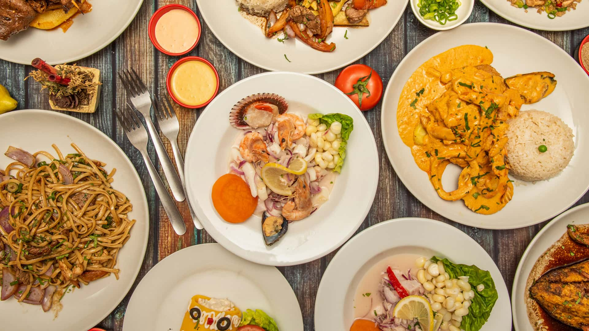
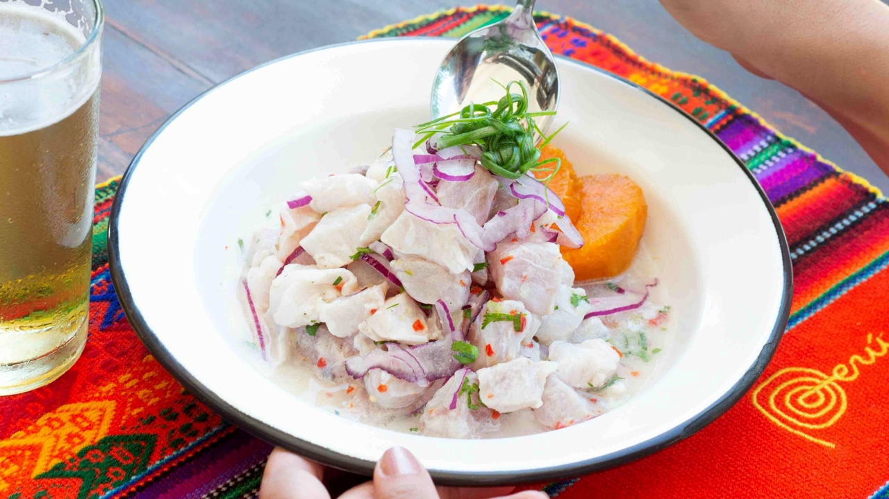
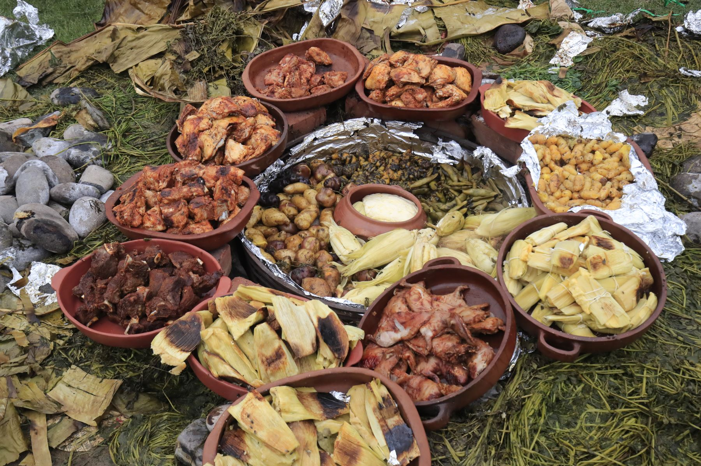
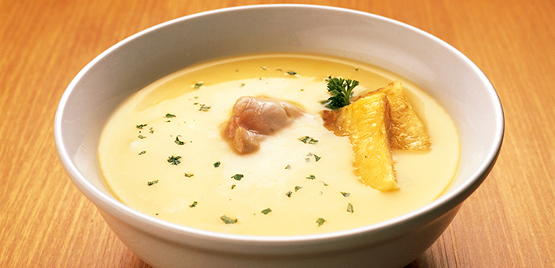
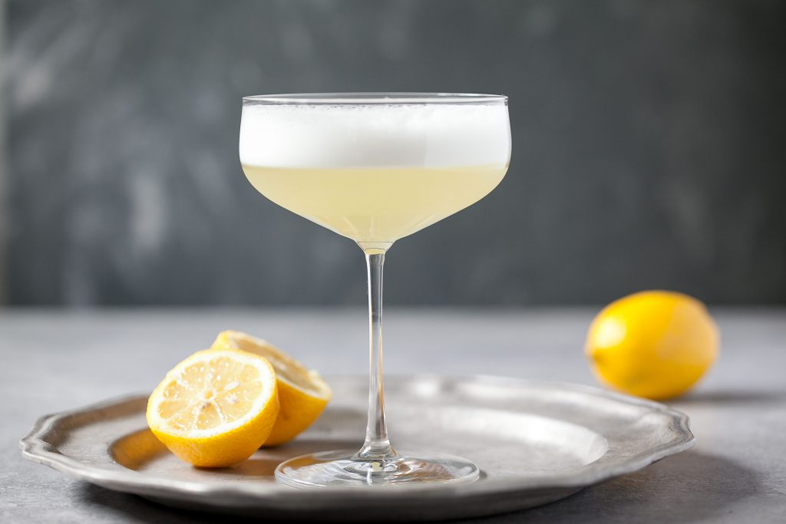

|
La cucina peruviana è considerata una delle più ricche e varie del pianeta. La sua forza nasce dall’incontro tra tradizioni indigene, eredità inca, influenze spagnole, africane, cinesi, giapponesi e italiane.
A questo si aggiunge una biodiversità straordinaria: coste ricche di pesce, montagne con migliaia di varietà di patate e cereali, e una foresta amazzonica piena di frutti e ingredienti rari.
La gastronomia del Perù è quindi un mosaico di sapori, tecniche e culture che convivono armoniosamente.
|
 |
La Costa
La cucina della costa peruviana è dominata dal pesce e dai frutti di mare, grazie alla corrente di Humboldt che rende l’oceano estremamente ricco.
Tra i piatti più rappresentativi troviamo:
- Ceviche (in foto) il piatto simbolo del Perù: pesce crudo marinato nel lime, con cipolla rossa, peperoncino e coriandolo
- Tiradito simile al ceviche ma con taglio giapponese e salsa più cremosa
- Jalea frittura croccante di pesce e frutti di mare
- Arroz con mariscos riso ai frutti di mare, ricco e speziato
La costa è anche il luogo dove nasce la cucina chifa, fusione tra tradizione peruviana e cinese, con piatti come arroz chaufa e tallarín saltado.
|
 |
Le Ande
La cucina andina è la più antica del Perù, legata alla cultura inca e ai prodotti coltivati in alta quota.
Ingredienti fondamentali:
- Patate (oltre 3.000 varietà)
- Quinoa, kiwicha e altri cereali ancestrali
- Mais in molte forme e colori
- Carni di alpaca e lama
Piatti tipici:
- Pachamanca (in foto) cottura rituale sotto terra con pietre roventi, carne, tuberi e erbe aromatiche
- Cuy chactado porcellino d’India fritto, piatto tradizionale delle Ande
- Chupe de quinoa zuppa nutriente a base di quinoa e verdure
- Papa a la huancaína patate con salsa cremosa al peperoncino giallo.
Questa cucina è semplice ma profondamente legata alla terra e ai cicli agricoli.
|
 |
La Selva
La foresta amazzonica peruviana offre una cucina completamente diversa, basata su frutti tropicali, pesci di fiume e preparazioni avvolte in foglie.
Piatti tipici:
- Juane riso, pollo e spezie avvolti in foglie di bijao
- Tacacho con cecina platano schiacciato con carne affumicata
- Paiche uno dei pesci d’acqua dolce più grandi al mondo
- Inchicapi (in foto) zuppa cremosa con arachidi e pollo
La selva è anche famosa per succhi e frutti come camu camu, cocona, aguaje.
|
 |
Bevande tradizionali
Il Perù ha anche bevande iconiche:
- Pisco Sour (in foto) cocktail nazionale a base di pisco, lime e albume
- Chicha morada bevanda dolce di mais viola, simbolo della cultura andina
- Inca Kola la bibita gialla più amata del Paese
- Mate de coca infuso tradizionale delle Ande
|
 |